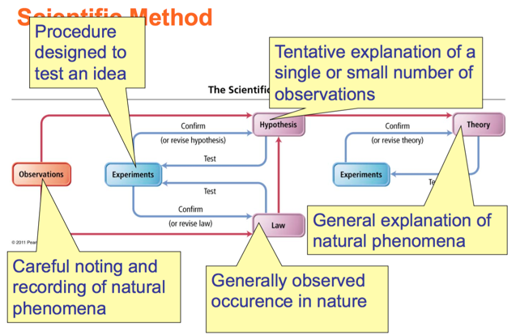
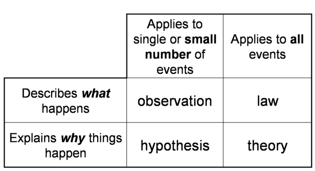
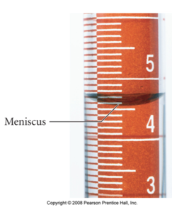
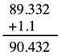
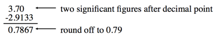
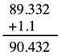

Week 1 - Day 2
Quizlet for terms in this lecture
Navigate using audio
Some online homework discussion
- Audio 0:00:29.813843
- You log on to the MyLabsPlus website
- Go to assignments
- They are arranged in order
- Audio 0:01:13.422000
- They are due at midnight, but you get 1% per hour late off your score. So you aren’t SOL if you don’t get it right on time
- You get a drop on the homework
- Audio 0:03:18.888195
- Speech about tax returns is actually about:
- You have 5 freebies on the clicker questions
- absences
- Same is true for the lab
- You get 2 absences
- More starts penalties
- You get 2 absences
- You have 5 freebies on the clicker questions
- Speech about tax returns is actually about:
- Audio 0:06:21.001575
- Re-iterating
- You get one drop grade in the class
- Shoot to make it the last test because it is the hardest
- You get one drop grade in the class
- Re-iterating
- Pre-labs are due mid-day the day before your lab
- If you have a Monday lab, your pre-lab is due noon Sunday
- Go to assignments
- Audio 0:09:10.406530
- You have two attempts at getting multiple choice right in homework
- 6 on numeric
Chapter 1 Notes Part 2
Classification of Pure Substances
- Pure substances can be categorized into two types:
- Elements
- Compounds
- This categorization depends on whether or not they can be broken down (or decomposed) into simpler substances.
- An element is a substance that cannot be chemically broken down into simpler substances.
- Basic building blocks of matter
- Composed of single type of atom, like helium
- A compound is a substance composed of two or more elements in fixed definite proportions.
- Most elements are chemically reactive and combine with other elements to form compounds.
Heterogeneous Mixture
- A heterogeneous mixture is one in which the composition varies from one region of the mixture to another.
- Made of multiple substances, whose presence can be seen (example: a salt and sand mixture)
- Portions of a sample of a heterogeneous mixture have different composition and properties.
- Made of multiple substances, whose presence can be seen (example: a salt and sand mixture)
Homogeneous Mixture
- A homogeneous mixture is one made of multiple substances, but it appears to be one substance.
- All portions of a sample have the same composition and properties (like sweetened tea).
- Homogeneous mixtures have uniform compositions because the atoms or molecules that compose them mix uniformly.
The Scientific Approach to Knowledge
- Audio 0:12:42.707245
- The approach to scientific knowledge is empirical
- It is based on observation and experimentation.
- The scientific method is a process for understanding nature by observing nature and its behavior through experimentation.
- Key characteristics of the scientific method
- Observations
- Formulation of hypotheses
- Experimentation
- Formulation of laws and theories
Observations
- Observations:
- They are also known as data.
- They are the descriptions about the characteristics or behavior of nature.
- Observations, verification of observations, and experimentation can lead scientists to formulate a hypothesis.
The Scientific Approach to Knowledge
- Scientists try to understand the universe through empirical knowledge gained through observation and experiment
Gathering Empirical Knowledge ─ Observation
- Some observations are descriptions of the characteristics or behavior of nature ─ qualitative
- Some observations compare a characteristic to a standard numerical scale ─ quantitative
From Observation to Understanding
- Audio 0:15:58.585935
- Hypothesis – a tentative interpretation or explanation for an observation
- A good hypothesis is one that can be tested to be proved wrong!
Testing Ideas
- Audio 0:17:57.155168
- Ideas in science are tested with experiments
- An experiment is a set of highly controlled procedures designed to test whether an idea about nature is valid
- The experiment generates observations that will either validate or invalidate the idea
Is this a good hypothesis?
- Audio 0:19:00.330922
- Yesterday, the phase of the moon was a crescent. I observed that it rained a lot yesterday.
- It also rained during the previous crescent moon.
- I hypothesize that crescent moons cause rain showers
- The hypothesis is the ‘why?’
- My answer: This is a good hypothesis because it can be tested and proved wrong
- Audio 0:21:04.453540
- Best answer: C
- It’s a good hypothesis because it’s falsifiable
- Audio 0:23:23.754722
- Audio 0:25:56.261455
- Good reasons to understand the importance of hypothesis
From Specific to General Understanding
- Audio 0:26:25.458523
- A hypothesis is a potential explanation for a single or small number of observations
- A scientific theory is a general explanation for why things in nature are the way they are and behave the way they do
- Integrates a lot of different observations
- Lets us predict what’s happening in the universe
Think about it
- Given what you just learned about the term “Theory”, what’s wrong with this statement:
- “The theory of gravity is just a theory and therefore probably wrong”
- Audio 0:27:55.076377
- By the time you get to calling things theories, they have been tested a lot
- The scientific method says you can’t prove anything, you can only disprove things
- You’ll have to explain exceptions to the theory at some point so a new theory will emerge
- “The theory of gravity is just a theory and therefore probably wrong”
From Specific to General Observations
- A scientific law is a statement that summarizes all past observations and predicts future observations
- Law of Conservation of Mass – “In a chemical reaction matter is neither created nor destroyed.”
- A scientific law allows you to predict future observations
- 
- Audio 0:31:28.593326
Relationships Between Pieces of the Scientific Method
- 
The Scientific Approach to Knowledge
- It is necessary to be careful with the information presented by an experimentalist who lacks theoretical principles… [he] gathers at random several facts and presents them as proofs… scientific knowledge without reasoning [theory] does not exist.”
- J. le R. d’Alembert (1717-1783), from Nouvelles Experiences sur la Resistance des Fluids. Jombert, Paris (1997)
- D’Alembert was always surrounded by controversy. ….Unfortunately he carried [his]… pugnacity into his scientific research and once he had entered a controversy, he argued his cause with vigour and stubbornness. He closed his mind to the possibility that he might be wrong…
- Thomas L. Hankins (1990). Jean D’Alembert: Science and the Enlightenment. Taylor & Francis. p. 236. ISBN 2881243991
Why Is Scientific Measurement Important?
- Scientific data can be either qualifiable or quantifiable
- Qualifiable data are observational
- Subjective in nature
- Examples: color, shape
- Qualifiable data are observational
- Quantifiable data are measurable (empirical).
- Objective in nature
- Uses equipment (e.g., glassware, balance, instrumentation) capable of generating empirical data with standardized UNITS.
- English system (e.g., inch, feet, etc.) – International System of Units (SI)
- Metric system
What Is a Measurement?
- Audio 0:36:17.268476
- quantitative observation
- comparison to an agreed- upon standard
- every measurement has a number and a unit
- 
Significant Figures
- Audio 0:37:46.810624
- No measurement can be more accurate than half the smallest division
- Note: Tro says 1/10 of smallest division
- Often write +- to indicate this: 11+-1 mm, 1.1 +-0.3 cm
- No error range given? Then assume + half the least Significant Figure
- Audio 0:39:46.713576
- Any digit that is not zero is significant
- 1.234 kg 4 significant figures
- Zeros between nonzero digits are significant
- 606 m 3 significant figures
- Zeros to the left of the first nonzero digit are not significant
- 0.08 L 1 significant figure
- If a number is greater than 1, then all zeros to the right of the decimal point are significant
- 2.0 mg 2 significant figures
- If a number is less than 1, then only the zeros that are at the end and in the middle of the number are significant
- 0.004020 g 4 significant figures
- test your ability
How many significant figures are in each of the following measurements?
- Audio 0:42:44.871665
- 24 mL
- 2
- 3001 g
- 4
- 0.0320 m^3
- 3
- 6.4 x 104 molecules
- 2
- 560 kg
- 2
Rounding Rules for Significant Figures
- Audio 0:44:53.580413
- Digit being rounded > 5
- Add 1 to least significant digit
- Result: 4.16 with 2 sig figs becomes 4.2
- Digit being rounded < 5
- Result: 4.14 with 2 sig figs becomes 4.1
- ROUND AT THE END OF THE PROBLEM
Addition or Subtraction - Significant Figures
- The answer cannot have more digits to the right of the decimal point than any of the original numbers
- 
- 1.1 has one sig fig after decimal
- round 90.432 to 90.4
- 
- 
- Look at sig figs in the given variables in the problem and have that many in your answer
Vocab
| Term | Definition |
|---|---|
| element | a substance that cannot be chemically broken down into simpler substances |
| compound | a substance composed of two or more elements in fixed definite proportions |
| heterogeneous mixture | mixture in which the composition varies from one region of the mixture to another |
| homogeneous mixture | mixture made of multiple substances, but it appears to be one substance |
| observations | also known as data |
| hypothesis | a tentative interpretation or explanation for an observation |
| qualitative | type of observation which describe characteristics of something |
| quantitative | type of observation which are compare a characteristic to a standard numerical scale |
| experiment | a set of highly controlled procedures designed to test whether an idea about nature is valid |
| scientific theory | a general explanation for why things in nature are the way they are and behave the way they do |
| scientific law | a statement that summarizes all past observations and predicts future observations |
| Law of Conservation of Mass | In a chemical reaction matter is neither created nor destroyed |